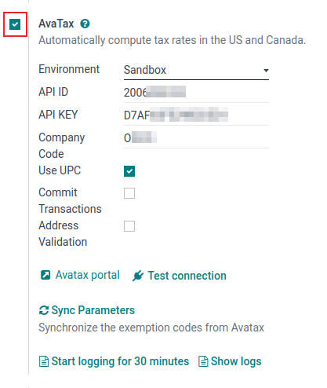
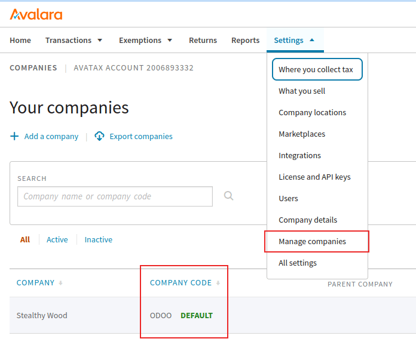

การผสานรวม AvaTax¶
AvaTax ของ Avalara เป็นซอฟต์แวร์ภาษีบนคลาวด์ การรวม AvaTax เข้ากับ Odoo ช่วยให้การคำนวณภาษีแบบเรียลไทม์และเฉพาะภูมิภาคเมื่อผู้ใช้ขาย ซื้อ และออกใบแจ้งหนี้ให้กับรายการใน Odoo AvaTax รองรับการคำนวณภาษีกับทุกประเทศในผังขององค์การสหประชาชาติ รวมถึงธุรกรรมระหว่างพรมแดน
Important
AvaTax ใช้งานได้สำหรับการใช้งานร่วมกับฐานข้อมูล/บริษัทที่มีสถานที่ตั้งในสหรัฐอเมริกา แคนาดา และบราซิลเท่านั้น ซึ่งหมายความว่าตำแหน่งทางการเงิน/ประเทศของฐานข้อมูลสามารถตั้งค่าเป็นสหรัฐอเมริกา แคนาดา หรือบราซิลเท่านั้น สำหรับข้อมูลเพิ่มเติม โปรดอ้างอิงเอกสารนี้: ประเทศการเงิน
AvaTax คำนวณอัตราภาษีตามสถานที่สำหรับแต่ละรัฐ เทศมณฑล และเมือง ซึ่งจะช่วยปรับปรุงความแม่นยำในการโอนเงินโดยให้ความสนใจอย่างใกล้ชิดกับกฎหมาย กฎ ขอบเขตเขตอำนาจศาล และสถานการณ์พิเศษ (เช่น วันหยุดภาษี และการยกเว้นผลิตภัณฑ์) บริษัทที่ผสานรวมกับ AvaTax สามารถควบคุมการคำนวณภาษีภายในองค์กรได้ด้วยการผสานรวม API ที่เรียบง่ายนี้
Important
มีข้อจำกัดบางอย่างใน Odoo ในขณะที่ใช้ AvaTax สำหรับการคำนวณภาษี:
ไม่รองรับ AvaTax ในแอป POS ของ Odoo เนื่องจากรูปแบบการคำนวณภาษีแบบไดนามิกมีมากเกินไปสำหรับธุรกรรมภายในที่อยู่จัดส่งเดียว เช่น ร้านค้าหรือร้านอาหาร
AvaTax และ Odoo ใช้ที่อยู่บริษัท ไม่ใช่ ที่อยู่คลังสินค้า
ไม่รองรับ ภาษีสรรพสามิต ซึ่งรวมถึงภาษียาสูบ/บุหรี่ไฟฟ้า ภาษีเชื้อเพลิง และอุตสาหกรรมเฉพาะอื่นๆ
See also
เอกสารสนับสนุนของ Avalara: เกี่ยวกับ AvaTax
ตั้งค่าบน AvaTax¶
หากต้องการใช้ AvaTax จำเป็นต้องมีบัญชีกับ Avalara ในการตั้งค่า หากยังไม่ได้ตั้งค่า ให้เชื่อมต่อกับ Avalara เพื่อซื้อใบอนุญาต: Avalara: Let's Talk
Tip
เมื่อตั้งค่าบัญชีแล้ว ให้จดบันทึก AvaTax ID บัญชี สิ่งนี้จำเป็นใน การตั้งค่า Odoo ใน Odoo หมายเลขนี้คือ API ID
จากนั้น _ สร้างโปรไฟล์บริษัทพื้นฐาน
สร้างโปรไฟล์บริษัทขเบื้องต้น¶
รวบรวมรายละเอียดธุรกิจที่สำคัญสำหรับขั้นตอนถัดไป: สถานที่เก็บภาษี สินค้า/บริการที่ขาย (และสถานที่ขาย) และการยกเว้นภาษีลูกค้า หากมี ปฏิบัติตามเอกสารของ Avalara เพื่อสร้างโปรไฟล์บริษัทเบื้องต้น:
เชื่อมต่อกับ AvaTax¶
หลังจากสร้างโปรไฟล์บริษัทพื้นฐานใน Avalara แล้ว ให้เชื่อมต่อกับ AvaTax ขั้นตอนนี้จะเชื่อมโยง Odoo และ AvaTax แบบสองทิศทาง
ไปที่สภาพแวดล้อมของ แซนด์บ็อกซ์ ของ Avalara หรือสภาพแวดล้อมของ ระบบการผลิต ขึ้นอยู่กับประเภทของบัญชี Avalara ที่บริษัทต้องการรวมเข้าด้วยกัน
เข้าสู่ระบบเพื่อสร้าง รหัสใบอนุญาต ไปที่ คลิก สร้างรหัสใบอนุญาต
Important
คำเตือนจะแสดงขึ้นว่า: หากแอปธุรกิจของคุณเชื่อมต่อกับโซลูชัน Avalara การเชื่อมต่อจะใช้งานไม่ได้จนกว่าคุณจะอัปเดตแอปด้วยรหัสใบอนุญาตใหม่ การดำเนินการนี้ไม่สามารถยกเลิกได้
การสร้างรหัสใบอนุญาตใหม่จะตัดการเชื่อมต่อกับแอปธุรกิจที่มีอยู่โดยใช้การผสานรวม AvaTax อย่าลืมอัปเดตแอปเหล่านี้ด้วยรหัสสัญญาอนุญาตใหม่
หากนี่จะเป็นการผสานรวม API ครั้งแรกด้วย AvaTax และ Odoo จากนั้นคลิก สร้างรหัสใบอนุญาต
หากนี่คือรหัสใบอนุญาตเสริม ตรวจสอบให้แน่ใจว่าการเชื่อมต่อก่อนหน้านี้สามารถใช้งานไม่ได้ มีรหัสใบอนุญาต เพียงใบเดียว**เท่านั้น**ที่เชื่อมโยงกับแซนด์บ็อกซ์ Avalara และบัญชีที่ใช้งานจริงแต่ละบัญชี
Warning
คัดลอกคีย์นี้ไปยังที่ที่ปลอดภัย แนะนำให้สำรองคีย์ใบอนุญาตไว้เพื่อใช้อ้างอิงในอนาคต คีย์นี้ ไม่สามารถ เรียกคืนได้หลังจากออกจากหน้าจอนี้
การกำหนดค่า Odoo¶
ก่อนที่จะใช้ AvaTax มีการกำหนดค่าเพิ่มเติมบางอย่างใน Odoo เพื่อให้แน่ใจว่าการคำนวณภาษีจะทำได้อย่างถูกต้อง
ตรวจสอบว่าฐานข้อมูล Odoo มีข้อมูลที่จำเป็น ประเทศที่ตั้งค่าไว้ตั้งแต่แรกในฐานข้อมูลจะกำหนดสถานะทางการเงิน และช่วย AvaTax ในการคำนวณอัตราภาษีที่แม่นยำ
ประเทศการเงิน¶
หากต้องการตั้งค่า ประเทศการเงิน ให้ไปที่ :เมนูการเลือก:แอประบบบัญชี --> การกำหนดค่า --> การตั้งค่า
See also
ใต้ส่วน ภาษี ให้ตั้งค่าคุณลักษณะ ประเทศการเงิน เป็น สหรัฐอเมริกา, แคนาดา หรือ บราซิล จากนั้น คลิก บันทึก
การตั้งค่าของบริษัท¶
บริษัททั้งหมดที่ดำเนินงานภายใต้ฐานข้อมูล Odoo ควรมีที่อยู่แบบเต็มและครบถ้วนแสดงอยู่ในการตั้งค่า ไปที่ และภายใต้ส่วน บริษัท ตรวจสอบให้แน่ใจว่ามีบริษัทเดียวเท่านั้นที่ปฏิบัติการฐานข้อมูล Odoo คลิก อัปเดตข้อมูล เพื่อเปิดหน้าแยกต่างหากเพื่ออัปเดตรายละเอียดบริษัท
หากมีหลายบริษัทที่ดำเนินงานในฐานข้อมูล ให้คลิก จัดการบริษัท เพื่อโหลดรายชื่อบริษัทเพื่อเลือก อัปเดตข้อมูลบริษัทโดยคลิกเข้าไปที่บริษัทที่ต้องการ
ผู้ดูแลระบบฐานข้อมูลควรตรวจสอบให้แน่ใจว่า ถนน..., ถนน2..., เมือง, รัฐ, รหัสไปรษณีย์ และ :guilabel :ประเทศ ทั้งหมดได้รับการอัปเดตสำหรับบริษัท
ช่วยให้มั่นใจได้ถึงการคำนวณภาษีที่แม่นยำและการดำเนินการทางบัญชีสิ้นปีที่ราบรื่น
See also
../../../general/companies
การติดตั้งโมดูล¶
ถัดไป ตรวจสอบให้แน่ใจว่าได้ติดตั้งโมดูล Odoo AvaTax แล้ว โดยไปที่ ในแถบ ค้นหา... ให้พิมพ์ avatax แล้วกด Enter ผลลัพธ์ต่อไปนี้เติมข้อมูล:
ชื่อ |
ชื่อทางเทคนิค |
คำอธิบาย |
|---|---|---|
Avatax |
|
โมดูล AvaTax เริ่มต้น โมดูลนี้เพิ่มฟีเจอร์พื้นฐาน AvaTax สำหรับการคำนวณภาษี |
Avatax สำหรับการประยุกต์ใช้ตามประเทศ |
|
โมดูลนี้มีฟีเจอร์ที่จำเป็นสำหรับการรวม AvaTax เข้ากับการประยุกต์ใช้ตามประเทศใน Odoo |
Avatax สำหรับ SO |
|
รวมข้อมูลที่จำเป็นสำหรับการคำนวณภาษีสำหรับใบสั่งขายใน Odoo |
Avatax สำหรับสินค้าคงคลัง |
|
รวมการคำนวณภาษีใน Odoo สินค้าคงคลัง |
บริดจ์ Amazon/Avatax |
|
รวมฟีเจอร์การคำนวณภาษีระหว่าง Amazon Connector และ Odoo |
Avatax บราซิล |
|
รวมข้อมูลสำหรับการคำนวณภาษีในการประยุกต์ใช้สำหรับประเทศบราซิล |
Avatax บราซิลสำหรับบริการ |
|
โมดูลนี้ประกอบด้วยฟีเจอร์ที่จำเป็นสำหรับการคำนวณภาษีสำหรับบริการในการประยุกต์ใช้สำหรับประเทศบราซิล |
การขายการบริการของ Avatax ในประเทศบราซิล |
|
โมดูลนี้ประกอบด้วยฟีเจอร์ที่จำเป็นสำหรับการคำนวณภาษีสำหรับการขายบริการในการประยุกต์ใช้สำหรับประเทศบราซิล ซึ่งรวมถึงการแลกเปลี่ยนข้อมูลทางอิเล็กทรอนิกส์ (EDI) |
ทดสอบ SO สำหรับ AvaTax ของประเทศบราซิล |
|
โมดูลนี้มีฟีเจอร์ที่จำเป็นสำหรับการทดสอบใบสั่งขายในการประยุกต์ใช้สำหรับประเทศบราซิล |
คลิกปุ่ม ติดตั้ง บนโมดูลที่มีป้ายกำกับ Avatax: account_avatax การทำเช่นนี้จะติดตั้งโมดูลต่อไปนี้:
Avatax:
account_avataxAvatax สำหรับ SO:
account_avatax_saleAvatax สำหรับสินค้าคงคลัง:
account_avatax_stock
หากจำเป็นต้องใช้ AvaTax สำหรับการประยุกต์ใช้ตามประเทศ หรือใช้ Amazon Connector ให้ติดตั้งโมดูลเหล่านั้นทีละโมดูลโดยคลิกที่ ติดตั้ง บน Avatax สำหรับประยุกต์ใช้ตามประเทศ และ บริดจ์ Amazon/Avatax ตามลำดับ
See also
สำหรับคำแนะนำ AvaTax เฉพาะสำหรับการประยุกต์ใช้ตามประเทศ โปรดดูเอกสาร การประยุกต์ใช้ทางการเงิน ต่อไปนี้:
การตั้งค่า Odoo AvaTax¶
หากต้องการรวม AvaTax API เข้ากับ Odoo ให้ไปที่ส่วน ช่อง AvaTax ในส่วน ภาษี คือส่วนที่สร้างการกำหนดค่า AvaTax และป้อนข้อมูลรับรอง
ขั้นแรก ทำเครื่องหมายที่ช่องทำเครื่องหมายทางด้านซ้ายของการตั้งค่า AvaTax เพื่อเปิดใช้งาน AvaTax บนฐานข้อมูล นี่เป็นวิธีที่รวดเร็วและสะดวกในการเปิดใช้งานและปิดใช้งานการคำนวณภาษี AvaTax ในฐานข้อมูล Odoo
ข้อกำหนดเบื้องต้น¶
ขั้นแรก เลือก สภาพแวดล้อม ที่บริษัทต้องการใช้ AvaTax ใน โดยอาจเป็น แซนด์บ็อกซ์ หรือ การใช้งานจริง
See also
หากต้องการความช่วยเหลือในการพิจารณาว่าจะใช้สภาพแวดล้อม AvaTax ใด ( การใช้งานจริง หรือ แซนด์บอกซ์) โปรดไปที่: แซนด์บอกซ์กับสภาพแวดล้อมการใช้งานจริง.
ข้อมูลประจำตัว¶
ขณะนี้ สามารถป้อนข้อมูลรับรองได้แล้ว โดยควรป้อน AvaTax ID บัญชี ในช่อง API ID และควรป้อน รหัสใบอนุญาต ลงใน :guilabel :ฟิลด์ คีย์ API
Important
คุณสามารถดู รหัสบัญชี ได้โดยการลงชื่อเข้าใช้พอร์ทัล AvaTax (`แซนด์บ็อกซ์<https://sandbox.admin.avalara.com/>`_ or production) ที่มุมขวาบน ให้คลิกชื่อย่อของผู้ใช้และ บัญชี รหัสบัญชี จะแสดงอยู่ก่อน
หากต้องการเข้าถึง รหัสใบอนุญาต โปรดดูเอกสารประกอบนี้: เชื่อมต่อกับ AvaTax
สำหรับช่อง รหัสบริษัท ให้ป้อนรหัสบริษัท Avalara สำหรับบริษัทที่กำลังกำหนดค่า Avalara ตีความสิ่งนี้ว่าเป็น ค่าเริ่มต้น หากไม่ได้ตั้งค่าไว้ สามารถเข้าถึง รหัสบริษัท ได้ในพอร์ทัลการจัดการ Avalara
ขั้นแรก เข้าสู่ระบบพอร์ทัล AvaTax (แซนด์บ็อกซ์ หรือ การใช้งานจริง) จากนั้นไปที่ ค่า รหัสบริษัท อยู่ในแถวของ บริษัท ในคอลัมน์ รหัสบริษัท
ตัวเลือกการทำธุรกรรม¶
มีการตั้งค่าธุรกรรมสองรายการในการตั้งค่า Odoo AvaTax ที่สามารถกำหนดค่าได้: ใช้ UPC และ ประมวลผลสำเร็จ
หากทำเครื่องหมายที่ช่องถัดจาก ใช้ UPC ธุรกรรมจะใช้รหัสผลิตภัณฑ์สากล (UPC) แทนรหัสที่กำหนดแบบกำหนดเองใน Avalara ปรึกษาผู้ตรวจสอบบัญชี (CPA) เพื่อขอคำแนะนำเฉพาะ
หากทำเครื่องหมายที่ช่อง ประมวลผลสำเร็จ ธุรกรรมในฐานข้อมูล Odoo จะถูกคอมมิตสำหรับการรายงานใน AvaTax
การตรวจสอบที่อยู่¶
ฟีเจอร์ การตรวจสอบที่อยู่ ช่วยให้มั่นใจว่าที่อยู่ล่าสุดตามมาตรฐานไปรษณีย์ได้รับการตั้งค่าบนผู้ติดต่อใน Odoo นี่เป็นสิ่งสำคัญในการคำนวณภาษีที่แม่นยำสำหรับลูกค้า
Important
ฟีเจอร์ การตรวจสอบที่อยู่ ใช้ได้กับพันธมิตร/ลูกค้าในอเมริกาเหนือเท่านั้น
นอกจากนี้ ให้ทำเครื่องหมายในช่องถัดจากช่อง การตรวจสอบที่อยู่
Important
เพื่อการคำนวณภาษีที่แม่นยำ แนวทางปฏิบัติที่ดีที่สุดคือป้อนที่อยู่ให้ครบถ้วนสำหรับผู้ติดต่อที่บันทึกไว้ในฐานข้อมูล อย่างไรก็ตาม AvaTax ยังคงสามารถทำงานได้โดยพยายามอย่างเต็มที่โดยใช้เฉพาะ ประเทศ, รัฐ และ รหัสไปรษณีย์ เหล่านี้เป็นช่องที่ต้องกรอกขั้นต่ำสามช่อง
บันทึก การตั้งค่าเพื่อดำเนินการกำหนดค่า
Tip
ด้วยตนเอง ตรวจสอบ ที่อยู่โดยไปที่ และเลือกผู้ติดต่อ หลังจากที่โมดูล AvaTax ได้รับการกำหนดค่าบนฐานข้อมูลแล้ว ปุ่ม ตรวจสอบ จะปรากฏขึ้นตรงด้านล่างของ ที่อยู่
คลิก ตรวจสอบ และหน้าต่างป๊อปอัปจะปรากฏขึ้นพร้อมกับ ที่อยู่ที่ตรวจสอบแล้ว และ ที่อยู่เดิม อยู่ในรายการ หาก ที่อยู่ที่ตรวจสอบแล้ว เป็นที่อยู่ทางไปรษณีย์ที่ถูกต้องสำหรับวัตถุประสงค์ด้านภาษี ให้คลิก บันทึกที่ตรวจสอบแล้ว

Warning
ที่อยู่ที่ป้อนไว้ก่อนหน้านี้ทั้งหมดสำหรับผู้ติดต่อในฐานข้อมูล Odoo จะต้องได้รับการตรวจสอบโดยใช้กระบวนการตรวจสอบด้วยตนเองตามที่ระบุไว้ข้างต้น ที่อยู่จะไม่ได้รับการตรวจสอบโดยอัตโนมัติหากป้อนไว้ก่อนหน้านี้ สิ่งนี้จะเกิดขึ้นเมื่อมีการคำนวณภาษีเท่านั้น
ทดสอบการเชื่อมต่อ¶
หลังจากป้อนข้อมูลข้างต้นทั้งหมดลงในการตั้งค่า AvaTax บน Odoo แล้ว ให้คลิก ทดสอบการเชื่อมต่อ ซึ่งจะทำให้แน่ใจได้ว่า API ID และ API KEY นั้นถูกต้อง และมีการเชื่อมต่อระหว่าง Odoo และ Application Programming Interface (API) AvaTax
ซิงค์พารามิเตอร์¶
เมื่อเสร็จสิ้นการกำหนดค่าและการตั้งค่าของส่วน AvaTax ให้คลิกปุ่ม ซิงค์พารามิเตอร์ การดำเนินการนี้จะซิงโครไนซ์รหัสยกเว้นจาก AvaTax
สถานะทางการเงิน¶
จากนั้น นำทางไปยัง A สถานะทางบัญชี อยู่ในรายการชื่อ การแมปภาษีอัตโนมัติ (AvaTax) คลิกเพื่อเปิดหน้าการกำหนดค่าตำแหน่งทางการเงินของ AvaTax
ที่นี่ ตรวจสอบให้แน่ใจว่าได้ทำเครื่องหมายในช่อง ใช้ AvaTax API แล้ว
คุณสามารถเลือกทำเครื่องหมายที่ช่องถัดจากช่องที่มีป้ายกำกับ: ตรวจจับโดยอัตโนมัติ หากเลือกตัวเลือกนี้ Odoo จะใช้ สถานะทางบัญชี สำหรับธุรกรรมใน Odoo โดยอัตโนมัติ
การเปิดใช้งาน ตรวจจับโดยอัตโนมัติ ยังสร้างพารามิเตอร์เฉพาะ เช่น จำเป็นต้องมีภาษี, หมายเลขผู้เสียภาษีต่างประเทศ, กลุ่มประเทศ, ประเทศ, :guilabel: สหพันธรัฐ หรือ ช่วงรหัสไปรษณีย์ ปรากฏขึ้น การกรอกพารามิเตอร์เหล่านี้จะกรองการใช้งาน สถานะทางบัญชี การเว้นว่างไว้จะทำให้การคำนวณทั้งหมดดำเนินการโดยใช้ สถานะทางบัญชี
Warning
หากไม่ได้ทำเครื่องหมายที่ช่อง ตรวจจับโดยอัตโนมัติ ลูกค้าแต่ละรายจะต้องตั้งค่า สถานะทางบัญชี ในแท็บ การขายและการซื้อ ของบันทึกการติดต่อ โดยไปที่ หรือ จากนั้นเลือกลูกค้าหรือผู้ติดต่อเพื่อตั้งค่าสถานะทางบัญชี
ไปที่แท็บ การขายและการซื้อ และลงไปที่ส่วนที่ชื่อ สถานะทางบัญชี ตั้งค่าฟิลด์ สถานะทางบัญชี เป็นสถานะทางบัญชีสำหรับลูกค้า
บัญชี AvaTax¶
เมื่อเลือกตัวเลือกช่องทำเครื่องหมายสำหรับ ใช้ AvaTax API แท็บ AvaTax ใหม่จะปรากฏขึ้น คลิกเข้าไปในแท็บนี้เพื่อแสดงการตั้งค่าที่แตกต่างกันสองแบบ
การตั้งค่าแรกคือ บัญชีใบแจ้งหนี้ AvaTax ในขณะที่การตั้งค่าที่สองคือ บัญชีการคืนเงินของ AvaTax ตรวจสอบให้แน่ใจว่าทั้งสองบัญชีได้รับการตั้งค่าเพื่อการเก็บบันทึกสิ้นปีที่ราบรื่น ปรึกษาผู้ตรวจสอบบัญชี (CPA) เพื่อขอคำแนะนำเฉพาะเกี่ยวกับการตั้งค่าทั้งสองบัญชี
คลิก บันทึก เพื่อดำเนินการเปลี่ยนแปลง
การทำแผนที่ภาษี¶
การผสานรวม AvaTax ใช้ได้กับใบสั่งขายและใบแจ้งหนี้ที่มีสถานะทางบัญชี AvaTax รวมอยู่ด้วย
Tip
นอกจากนี้ ยังมีแท็บ การแมปภาษี และ แท็บการแมปบัญชี ใน การแมปภาษีอัตโนมัติ (AvaTax) สถานะทางการเงิน ซึ่งสามารถกำหนดค่าการแมปสำหรับผลิตภัณฑ์ได้ หากต้องการเข้าถึง สถานะทางบัญชี ให้ไปที่
การแมปหมวดหมู่ผลิตภัณฑ์¶
ก่อนที่จะใช้การผสานรวม ให้ระบุ หมวดหมู่ Avatax ในหมวดหมู่ผลิตภัณฑ์ ไปที่ เลือกหมวดหมู่ผลิตภัณฑ์เพื่อเพิ่ม หมวดหมู่ AvaTax ลงไป ในช่อง หมวดหมู่ AvaTax ให้เลือกหมวดหมู่จากเมนูแบบเลื่อนลง หรือ ค้นหาเพิ่มเติม... เพื่อเปิดรายการตัวเลือกทั้งหมด

การแมปผลิตภัณฑ์¶
หมวดหมู่ AvaTax อาจถูกกำหนดไว้ในแต่ละผลิตภัณฑ์เช่นกัน หากต้องการตั้งค่า หมวดหมู่ Avatax ให้ไปที่ เลือกผลิตภัณฑ์ที่จะเพิ่ม หมวดหมู่ Avatax ใต้แท็บ ข้อมูลทั่วไป ทางด้านขวาสุดคือช่องตัวเลือกที่มีป้ายกำกับ: หมวดหมู่ Avatax สุดท้าย คลิกเมนูแบบเลื่อนลง และเลือกหมวดหมู่ หรือ ค้นหาเพิ่มเติม... เพื่อค้นหารายการที่ไม่อยู่ในรายการ
Note
หากทั้งผลิตภัณฑ์และหมวดหมู่มีชุด หมวดหมู่ AvaTax ของผลิตภัณฑ์ หมวดหมู่ AvaTax จะมีความสำคัญเหนือกว่า

Important
การแมป หมวดหมู่ AvaTax บน ผลิตภัณฑ์ หรือ หมวดหมู่ผลิตภัณฑ์ ควรดำเนินการให้เสร็จสิ้นสำหรับทุก ผลิตภัณฑ์ หรือ หมวดหมู่ผลิตภัณฑ์ ขึ้นอยู่กับเส้นทางที่เลือก
See also